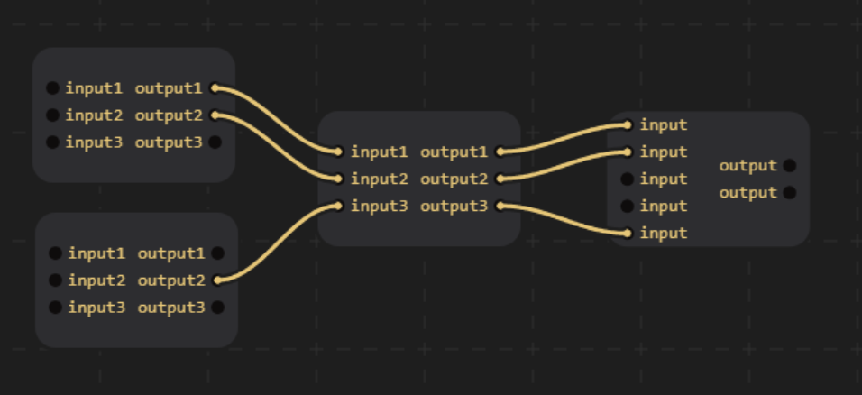

CodeGraph
I was using the unity shader graph tool (a graph based version of hlsl), and thought it would be cool to make it myself in Javascript.
- Heres the editor.
- Heres the github page.
Main Menu
Projects